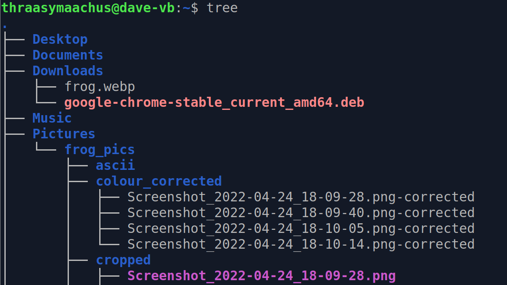

The Unix Terminal

The unix command line holds many secrets
Good things to remember
- Use 'tab' to autocomplete commands and file names
- You can pipe the output of one function into another by using |
- It's a good idea to learn the command line functionality of common applications
- google-chrome <filename> will open a file (e.g. an HTML file) with chrome
- git clone <SSH key> clones a github repo to your computer
Milestones
- Used the imagemagik library to edit frog pics on the command line